PROJECTS
1
Project: The Rift: An Afronaut's Journey
Year: 2015… ongoing
Team: Ayodamola Tanimowo Okunseinde
Role: Concept, Design, Technology
Designing Multiplicity, Afrofuturism Conference '15,
- Expeditions
- Artifacts
- Unit 1
- Afronaut Suite
What does it mean to exist in the penumbra, seen yet unseen, belonging but still excluded, alive yet dead?
see as the alien,
The Rift: An Afronauts Journey is a response to the persistent misrepresntation of cultures and people of the African decent. The Rift recognizes the lack of representation of these peoples and their culture in current projections of the future. Additionally The Rift argues that the denial of this "future space" misrepresents Africa's potential and denies the intrinsic human capacity of planning and organizing to its people. The deleterious effects of the above is an erosion of the humanity and agency of the subject cultures in the eyes of the dominant Western culture.
- Fanon, Frantz. Black Skin, White Masks. United States, Grove Atlantic, 2008.
- The Brother from Another Planet. John Sayles. Cinecom Pictures, 1984. Film.
|
Expedition 2 - Bedford Stuyvesant, 2015 | 
Expedition 2 - Bedford Stuyvesant, 2015
|

Expedition 2 - Bedford Stuyvesant, 2015 | 
Expedition 4 - Shanghai, 2016 |
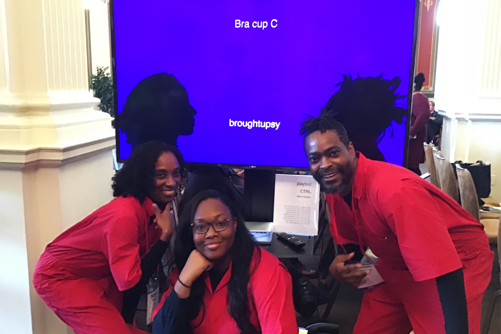 Expedition 5 - Washington DC, 2017 | 
Expedition 4 - Shanghai, 2016 |

onjẹ, 2015 - Raspberry Pi, expanding foam, Arduino, feathers, fur, speaker, cloth, tubing |
afẹ́fẹ́, 2015 - Raspberry Pi, expanding foam, Arduino, feathers, fur, speaker, cloth, tubing |
ẹnu, 2015 - Raspberry Pi, expanding foam, Arduino, feathers, fur, speaker, cloth, tubing |
Unit 1 - Donald, 2015 - Digital image |
Unit 1 - Arabelle1, 2015 - Digital image | 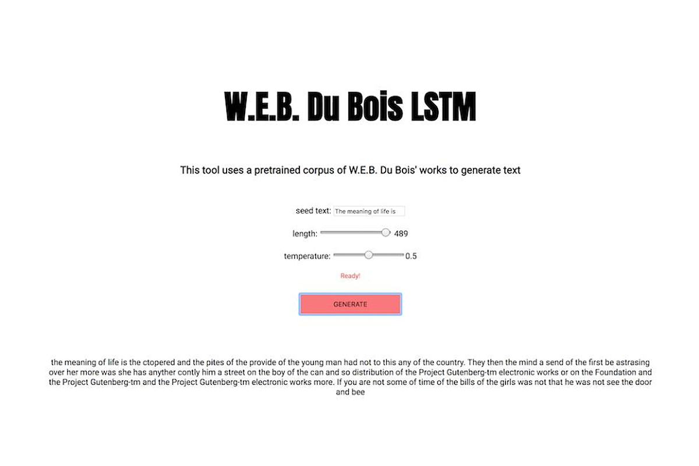 Unit 1 - Amirah, 2015 - Digital image |
|
https://youtu.be/WSf5Wv0PAiY |
2
Project: Iyapo Repository
Year: 2016… ongoing
Team: Ayodamola Tanimowo Okunseinde, Salome Asega
Role: Concept, Design, Technology
- Workshops
- Manuscripts
- Art and Artifacts
- Moving Image
- Rare Books
- Honor
- Monolith
Iyapo Repository is a resource library that exists in a nondescript future that was founded to collect and preserve artifacts to ensure the history and legacy of people of African descent. It is named after Lilith Iyapo, a character in Octavia Butler's Xenogenesis series. Lilith Iyapo is the last remaining human who is left to straddle two complex worlds.
The library's conservators work closely with a global team of archivists to maintain the growing collection of art and artifacts. Through a series of workshops and exhibitions, participants are invited to become archivists, conservators then work with archivist to uncover the artifacts via prototyping sessions.
The repository is comprised of four major divisions: "Manuscripts" stores the Field Notes as archived documents; "Art & Artifacts" houses unearthed artifacts; "Moving Image" holds films made about the artifacts; and "Rare Books" contains ancillary documents contextualizing the repository.
- Hartman, Saidiya. "Venus in Two Acts." Small Axe, vol. 12 no. 2, 2008, p. 1-14. Project MUSE muse.jhu.edu/article/241115.
Archivists fill out official Field Notes, that detail the artifacts, these documents are preserved in our Manuscript Division for further study. The Field Notes serve as blueprints for recovering, building, and restoring artifacts. Based on the archivists' drawings, conservators work tediously to preserve the artifact as it once was, so they can be exhibited in the main collection.
| 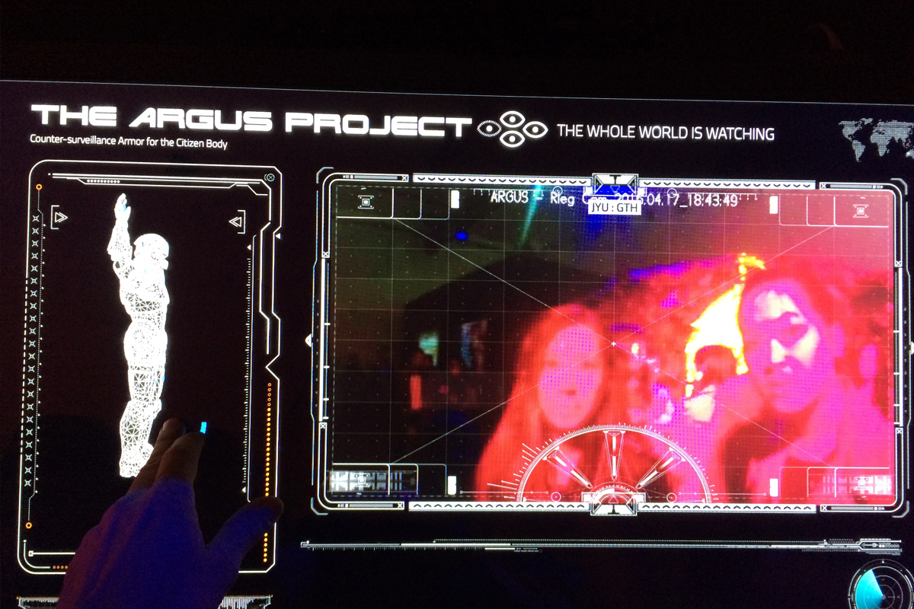 |

|
|
| 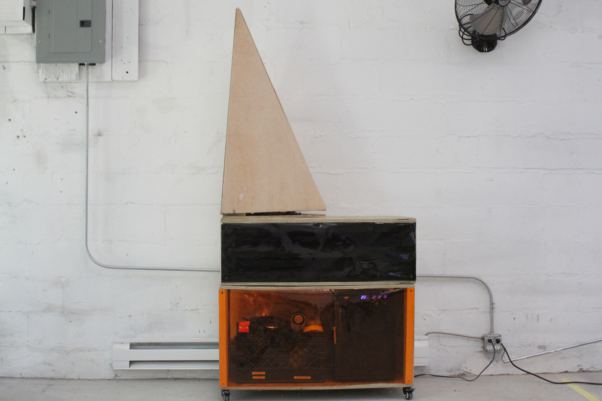 |
| 
|
|
|
| 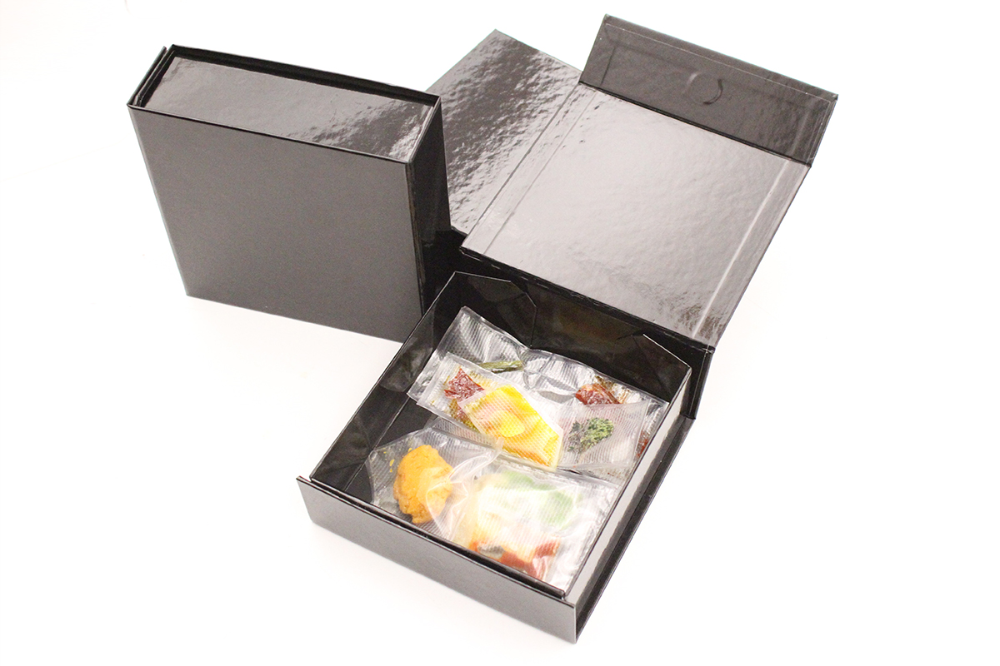 |
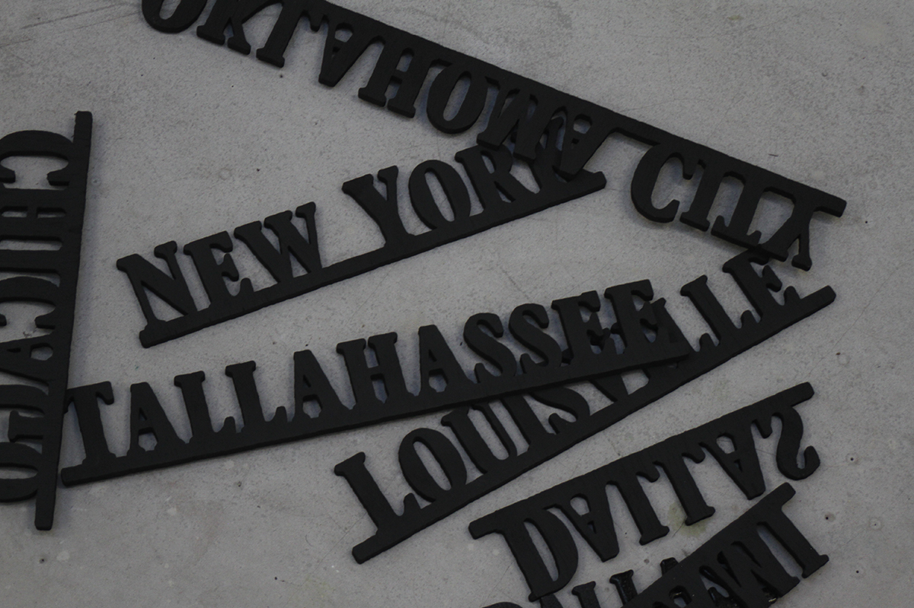 |
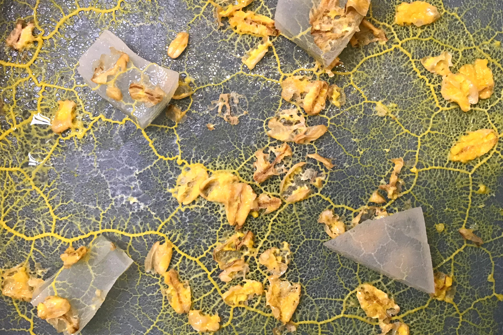 |
|
3
Project: The Argus Project
Year: 2016
Team: Ayodamola Tanimowo Okunseinde, Gan Golan, Raquel de Anda, Julien Terrell, Yvette King, Pierre Mendy, Ron Morrison
Role: Design, Technology
If police wear body armor to protect themselves in public, what must the public wear to protect themselves from the police?
In ancient Greek myth, Argus Panoptes was a giant with 100 eyes who served as a watchman for and against the gods.
The Argus Project is a wearable sculpture, video installation, and counter-surveillance training that intersects with the public debate over police accountability. By embedding an array of camera "eyes" into a body-suit, Argus creates a "force field of accountability" around those being targeted by streaming video of police violence during protests.
Filming the police is not confrontational nor subversive; it is a democratic act. It bears witness to the actions of the state, it strengthens society and institutions. The Argus Project is not so much about an individual hero as the citizen body as a whole... Together, we are all Argus.
- Browne, Simone. Dark Matters: On the Surveillance of Blackness. United Kingdom, Duke University Press, 2015.
- Foucault, Michel. Discipline and Punish: The Birth of the Prison. United States, Knopf Doubleday Publishing Group, 2012.
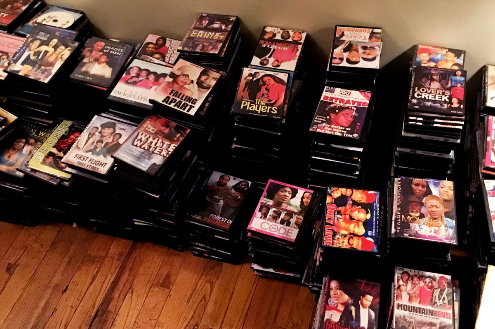 | 
|
|
|
| 
|
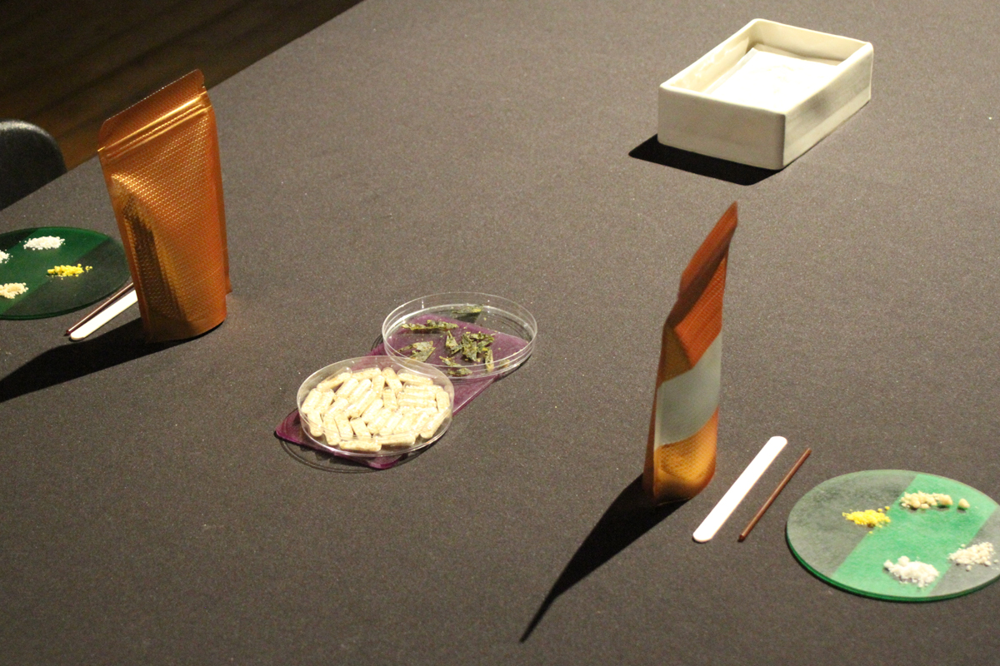 | 
|
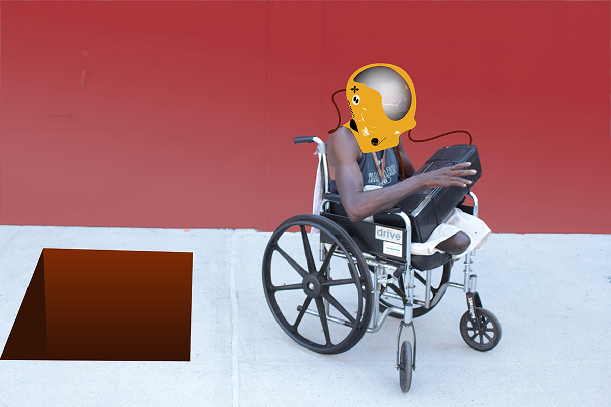 | 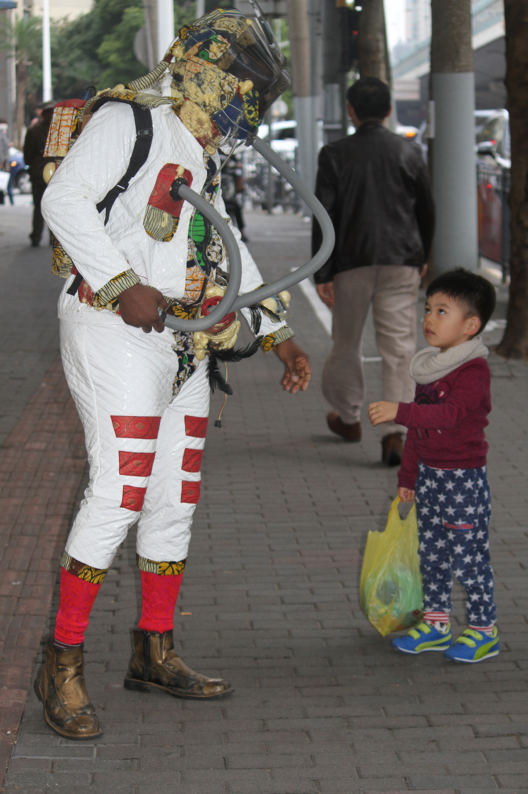 |
|
|
|
|
https://vimeo.com/185745057 |
4
Project: C.T.R.L. Alliance
Year: 2018… ongoing
Team: Ayodamola Tanimowo Okunseinde, Nikita R Huggins, Nicole Lloyd
Role: Concept, Design, Technology
- Unbroken Meaning
- Black Corpus
- SUBTEXT
Machine learning (ML) uses statistical techniques to give computers the ability to "learn" from data and thus improve performance on a specific task without being explicitly programmed. Though this field is growing exponentially, there exists a lack of representation of diverse groups in the field. This lack of representation in the programing of ML algorithms, collection of datasets, and development of ML based products is deleterious and diminishes the potential positive social impact, efficacy, and economic impact of the field. This lack of diversity additionally has the potential to manifests itself in products and systems that are biased and dangerous to underrepresented groups by not fully taking them into account.
C.T.R.L. seeks to address bias in machine learning systems while creating tools and artworks that make machine learning environments more accessible. Some of the methodology implemented include identifying unique modes of communication internal to specific communities, analysis of language structures and syntax, the use of machine learning tools to attempt to pull meaning from text, and the creation of physically based works that promote diversity in the machine learning field.
- Cathy, O'Neil. Weapons of Math Destruction: How Big Data Increases Inequality and Threatens Democracy. Penguin Books, Limited, 2016
| 
|
| 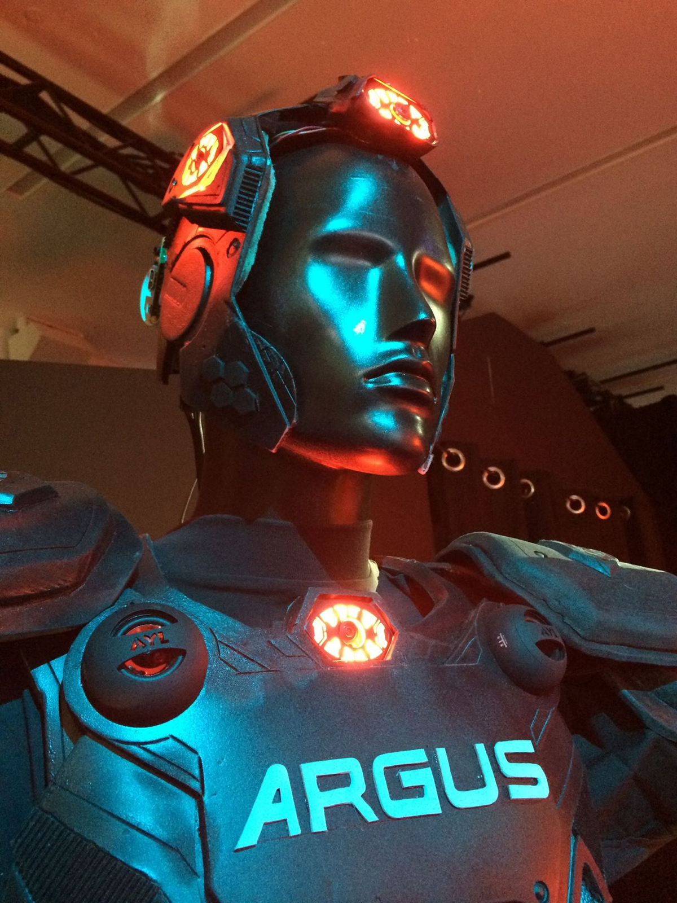 |
|
|
|
|
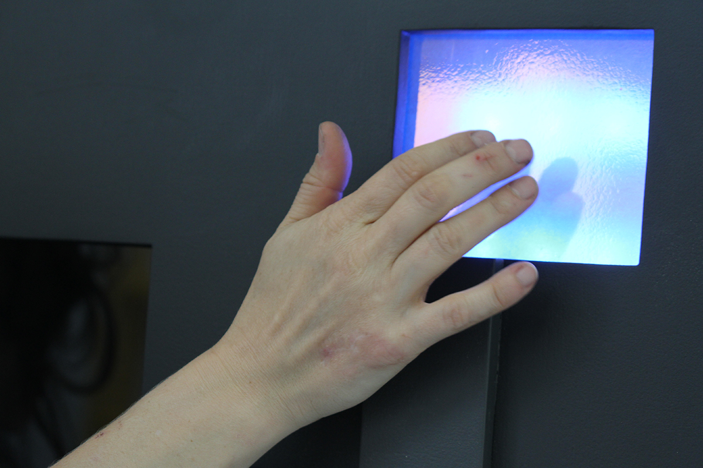 | 
|
5
Project: Provisions
Year: 2018… ongoing
Team: Ayodamola Tanimowo Okunseinde, Alonso Castro, Yvette King
Role: Concept, Design, Technology
- Test Kitchen
- Dinner
- Food Printer
- The Expelled
Provisions is a speculative test kitchen and culinary experience that explores the way “home” is made through food, memory, and elements of futurity. The installation takes West African Diaspora narratives, Diasporic food ingredients, and non-traditional culinary methods to construct meals. The test kitchen is the first research location of a food experience to trigger dialogue and discussion on how food anchors and maintains cultural connections to home as we transect temporal, metaphysical, and/or geographic spaces.
During an hour long session participants (6-8) dine on novel food courses while discussing their own cultural relationships to food and ingredients. Participants also experiment with creating their own simple courses via molecular gastronomy.
The dinner opens discussion on how “we" know the world and how we make home from food through the construction of narratives related to ideas of home & culture.
| 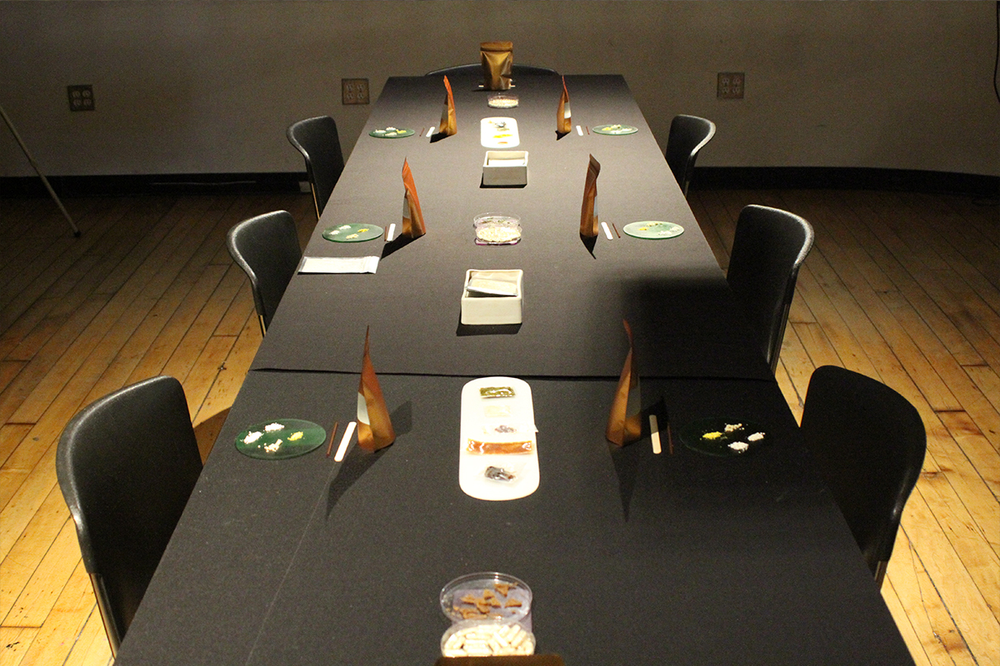 |
|
|
| 
|
|
|
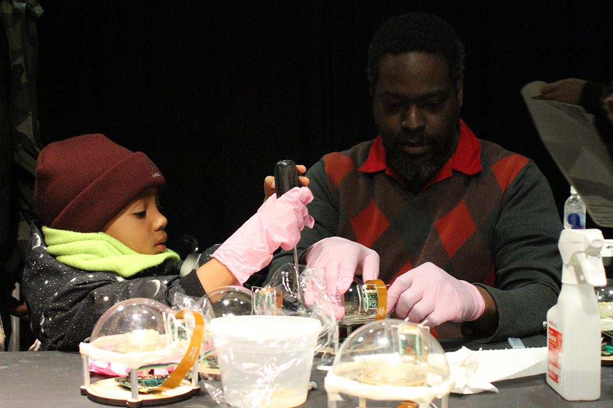 |
|
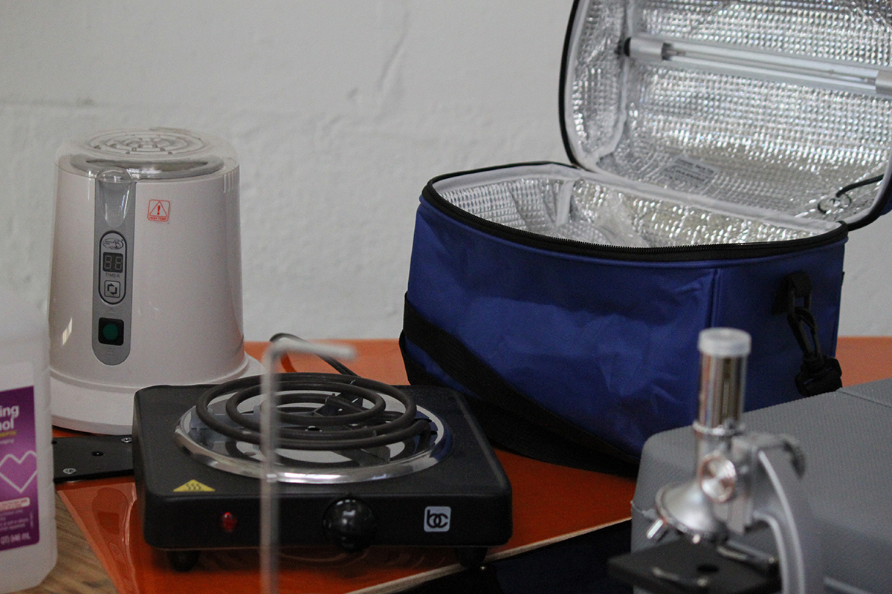 | 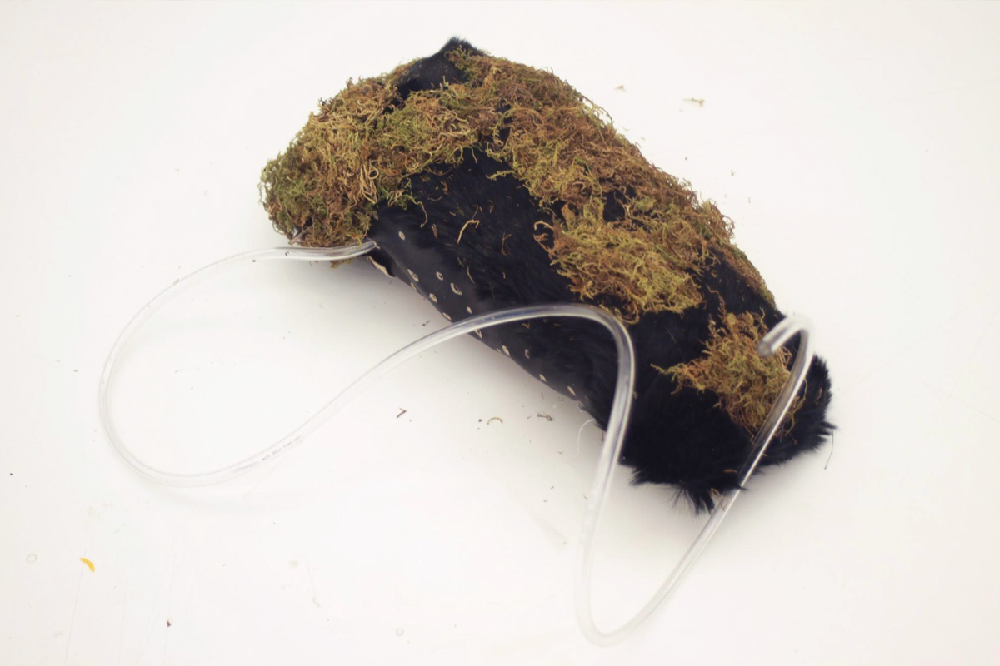 |
|
|
|
|
|
|
5
Project: SlimeTech Lab
Year: 2018… ongoing
Team: Ayodamola Tanimowo Okunseinde, Ashley Lewis
Role: Concept, Design, Technology
- What is Slime mold?
- The Lab
- Slime Sensor
- Workshops
The Slime Tech Lab (STL) is a mobile laboratory and living system that explores new futures through science, technology and storytelling. The STL is an art piece in itself - in roaming around New York it experiences feelings akin to the diaspora as it navigates to unpack its own narrative. As a beacon for futuristic exploration, it unfolds to teach spectators of the marvel of slime mold, revealing how this primordial organism can inform us about problem solving, equity and social cooperation. Our aim is to investigate it within our local communities. What can we learn from slime mold that can help us create an equitable society? What can be gleaned from biocultures that can help us reimagine borders and immigration? What would a future look like with decentralized information? The STL helps communities look to slime mold to envision vibrant, diverse futures through speculative design and microbiology.
Slime mold is a bright, vivid, living monoculture. Due to its ability to grow in the pattern of nodes and branches, technologists have been using it as a tool and medium to represent a wide array of efficient systems, from the functionality of the Internet to the decision making patterns of algorithmic artificial intelligence. Once mistakenly classified as a part of the fungi animal kingdom, this fascinating eukaryotic organism has the remarkable capacity to both aggregate into a multicellular structure as well as live freely as single cells.
It's segregation to the fringes of the sociataly applauded decompositional systems has left it largely unresearched, under explored and often misrepresented. We see slime mold for its metaphoric familiarity to the othered experience. We see its beauty, its immense potential to enrich ecological landscapes and we are here to be empowered with and through it to liberate new methods of thinking about the future, creating art and empathetically connecting us with marginalized sectors.
|
|
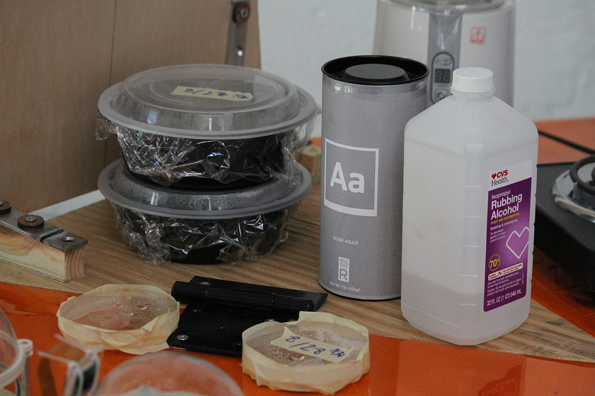 |
|

|
|
|
|
|
|
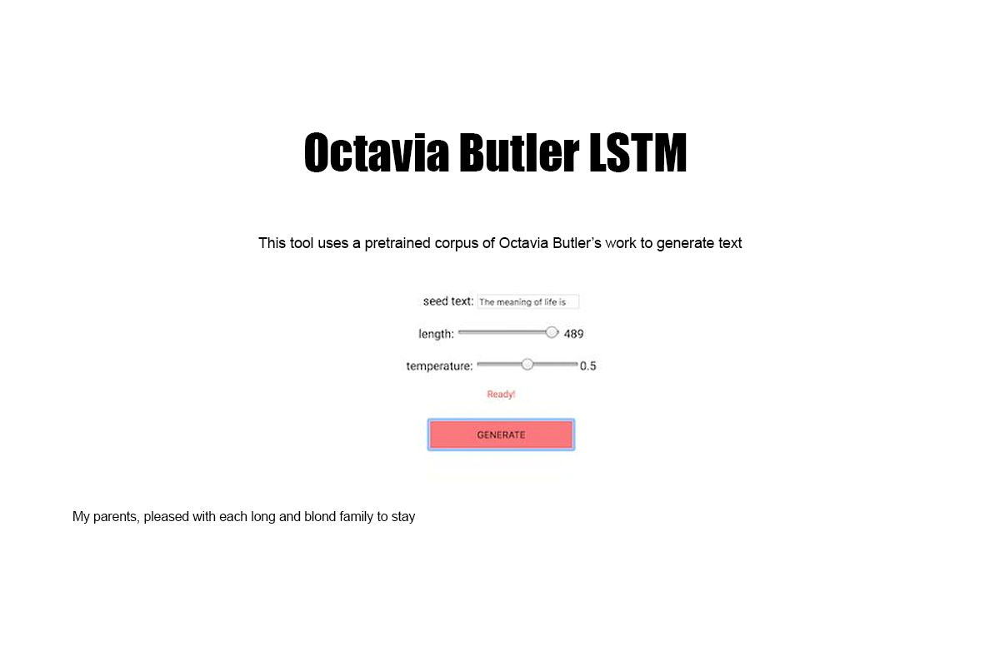 |
|
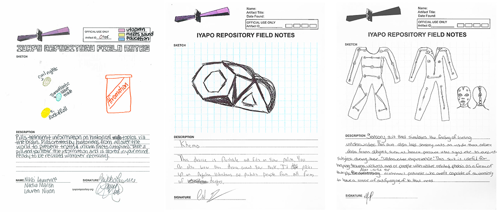 |
|
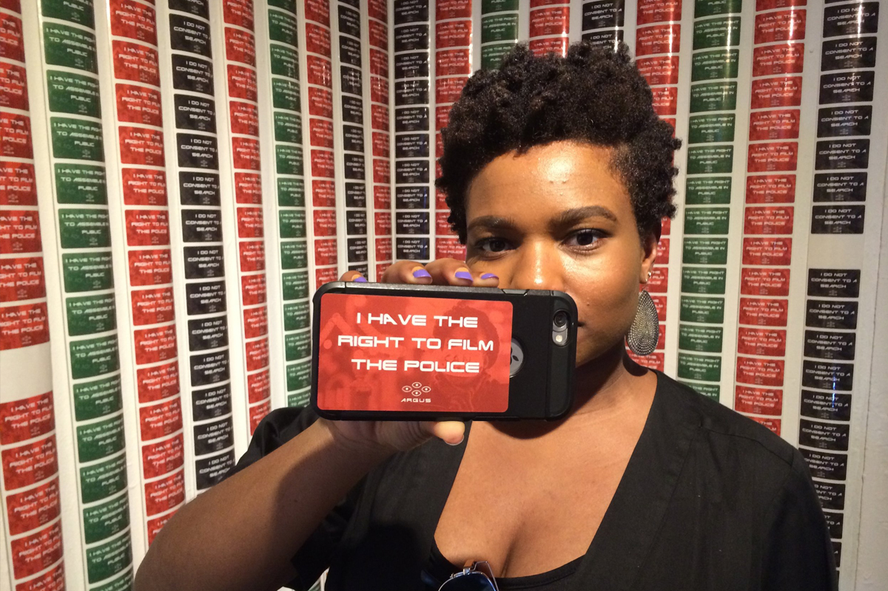 |
|
|
|
|
|
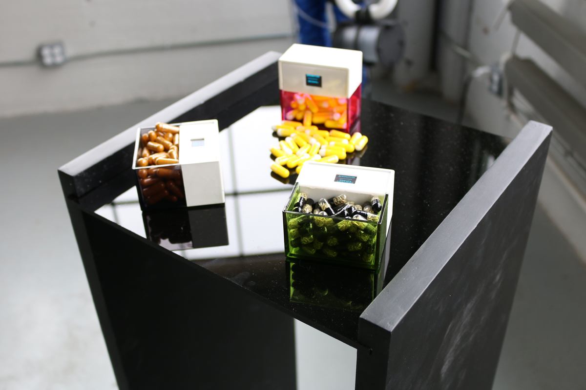 |
7
Project: Mimicry Sublime
Year: 2019… ongoing
Team: Ayodamola Tanimowo Okunseinde
Role: Concept, Design, Technology
- Homi Bhabha. “Of Mimicry and Man: The Ambivalence of Colonial Discourse.” October, vol. 28, The MIT Press, 1984, pp. 125–33.
8
Project: one and all
Year: 2020… ongoing
Team: Ayodamola Tanimowo Okunseinde
Role: Concept, Design, Technology
TEACHING
Prototyping the Margins - SP'19
Our perceptions of the future have been conjured via media, cultural references, and select readings as well as fact. In this we receive particular cultural and gendered perspectives, even unconsciously. Prototyping the Margins asks us to re-envision more diverse and inclusive futures, to ensure that they will exist. Through the reading and reference of alternate texts, using non traditional perspective and high-lighting bias, this class will deconstruct previously held notions of the future through reexamining the past and rethinking the present via storytelling and prototyping.
In this course, students would engage in literary exploration, design thinking, creative research, storytelling, and rapid prototyping. They will read and investigate “alternative culture" resources, remix their own narratives based on their findings, then prototype speculative expressive artifacts or environments that speak to the diversity of futures found. Throughout the semester, students will create 3 projects in the categories of Environment, Body, and Object that exist in their narrative world. Their final presentation would be in the form of an exhibition, in which students will have an opportunity to discuss their narrative, methodology, and process with external expert critics.
The course functions as a space for the discussion and recontextualization of notions of futurity and history. Additionally, the course is a workshop for designing and prototyping speculative artifacts and environments of revised histories and alternate futures.

| 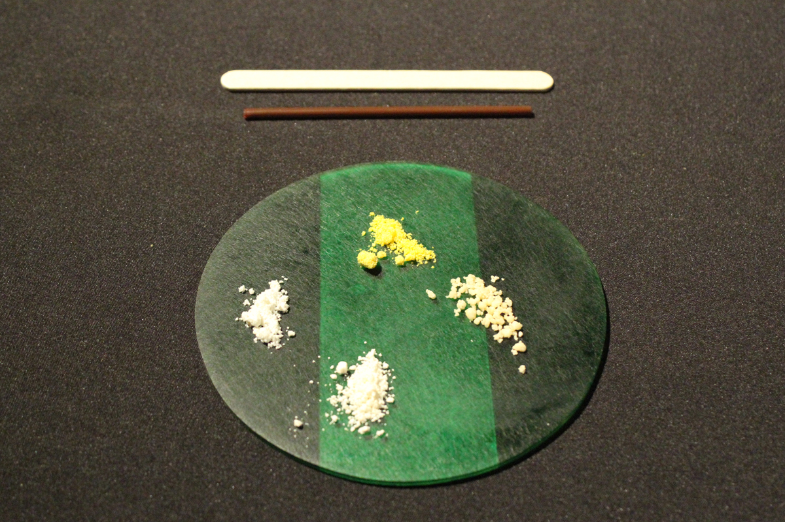 |
| 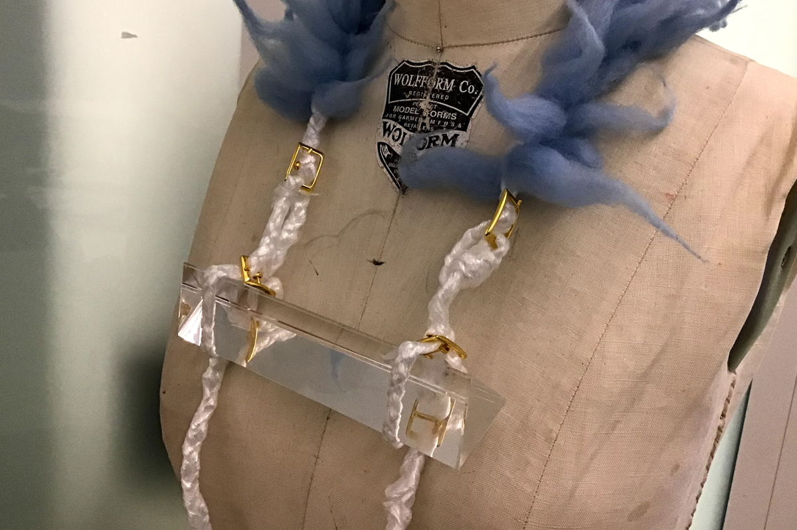 |
Medieval Multimedia
Instructors: Ayodamola Tanimowo Okunseinde, Sasha Zamler-Carhart
Like modern communication supports, medieval music manuscripts convey ideas
through design. Some are monuments of multimedia design: they include not only
music, but symbolic poetry, elaborate manuscript layout with eye-catching visuals,
and sometimes allegorical illustrations. These are not just works of art, but oGen
expensive communication supports commissioned to have a specific impact on a
specific audience. Their motivations are diverse: political campaigning (Roman de
Fauvel), bling and personal branding by wealthy individuals (Codex Chantilly),
extravagant wedding giGs to cement an alliance (Cyprus Manuscript).
Others yet are collective works of a fashionable young urban generation (Codex
Montpellier) that use a distinctive juxtaposition technique whose design structure is
curiously analogous to today’s “starter pack” memes—and whose esthetic was as
incomprehensible to the previous generations as memes are to today’s older
generations.
This course takes students through the musical, poetic and visual elements of these
multimedia manuscripts and analyze their communication strategies. We will
investigate which strategies made some of them exclusive, and why the structure of
medieval society could make it more sensible to design ultra-luxury products for a
limited but powerful audience, than more accessible products for a wider audience.
Many of these medieval musical manuscripts make extensive use of scientific lingo
and imagery as a communications tool—just like today’s marketing. We will study
how their oGen flashy use of scientific novelties in medieval mathematics (fractions),
physics (magnetism), astrology and cosmology would have dazzled medieval
audiences and established trendsetting credibility.

| 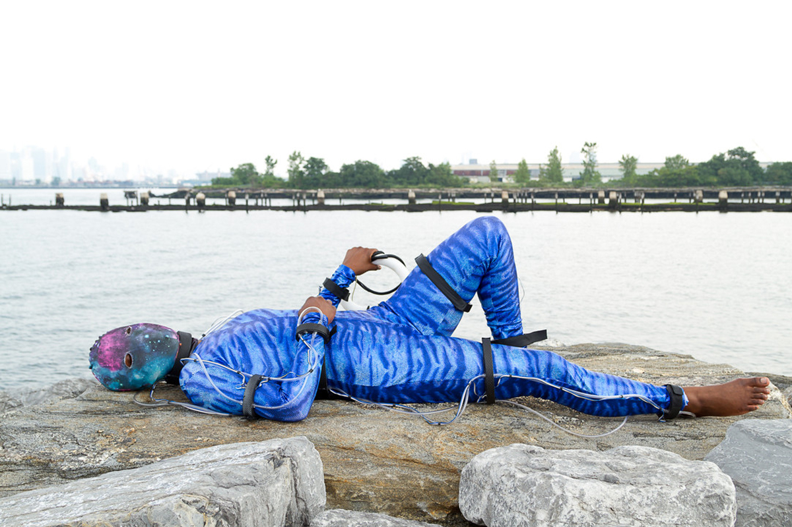 |

|
|
New Mythology - FA18
Humans have long created stories of superhuman/supernatural entities and have sought their guidance through rituals. Now, through artificial and machine intelligence, humans have created inhuman entities with superhuman capabilities. And we seek successfully or unsuccessfully to communicate with them and invoke their power for wisdom or profit. We have created new forms of ritual using technology. We have substituted the traditional sacred space with a virtual one. And we commune with one another and with these new divine beings in the digital realm. We have in essence created new mythologies.
New Mythologies will explore the interaction between traditional mythologies and technology and how through this interaction new mythologies and rituals arise. The course will combine an overview of traditional mythologies and rituals with an exploration of artificial/machine intelligence (e.g. neural networks and deep learning such as TensorFlow) as well as new media artists’ use of technology as a means of interpreting and creating mythologies and rituals. Through readings, discussions and brief writing assignments, we will also investigate the role these new technologies and mythologies play in our ever-changing socio-political climate and in digital colonialism. Though students will have small exercises throughout the semester, these exercises will be directed toward completing one project as a final. Students may make use of any relevant technologies in order to convey a concept of these new technologies’ influence on our ideas of the divine.
Student Work, New Mythology
| 
Student Work, New Mythology |
Student Work, New Mythology | 
Student Work, New Mythology |
Alternate Futures
Co-teacher: Salome Asega
Alternate Futures is an affirmation of the unique positions people of color, women, and queer people hold in design, technology, and media. The course aims to identify challenges faced by these communities and speculate solutions to these challenges to build futures that are self-determined and radical.
The course is designed to facilitate student research, conceptualization, writing, iteration, and production. Critical analysis of course readings and materials is key to the ability to form cohesive arguments for students’ final papers and projects.
Final papers and projects will revolve around: a well-researched analysis of systemic challenges, the creation of speculative solutions to an identified issue, a solution that promotes diversity, access, and representation in the world of design, technology, and media.
Student Work, Alternate Futures |
Student Work, Alternate Futures |

Student Work, Alternate Futures |
Student Work, Alternate Futures |
NEWS (here is the link… look at the tab "KNIGHT[a]"... Please add all on this list (by month, year) most recent fist. I have provided the example structure below. Please format to fit your template)
August 2019
July 2019
June 2019
WRITING
[a]@nicoleflloyd@gmail.com
_Assigned to Nicole Lloyd_